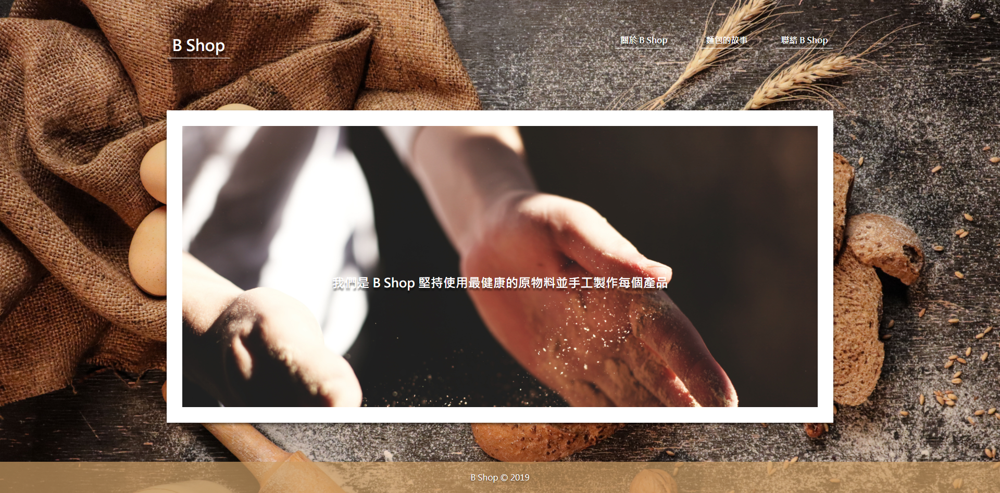

網頁設計 作業 - 練習排版
1. 參考
可以參考麵包店網站練習分頁的排。
新增一個網頁檔練習關於頁面的排版。

新增一個網頁檔練習商品頁面的排版。

新增一個網頁檔練習關於聯絡的排版。

2. 練習步驟：
1. 下載前一個作業的專案並且用 VS Code 開啟
2. 將分頁儲存與首頁相同的資料夾內。
3. 連結元素 a 可以將 href 直接設定為頁面，例如：href="about.html"
3. 練習重點：
Emmet 與排版技巧。